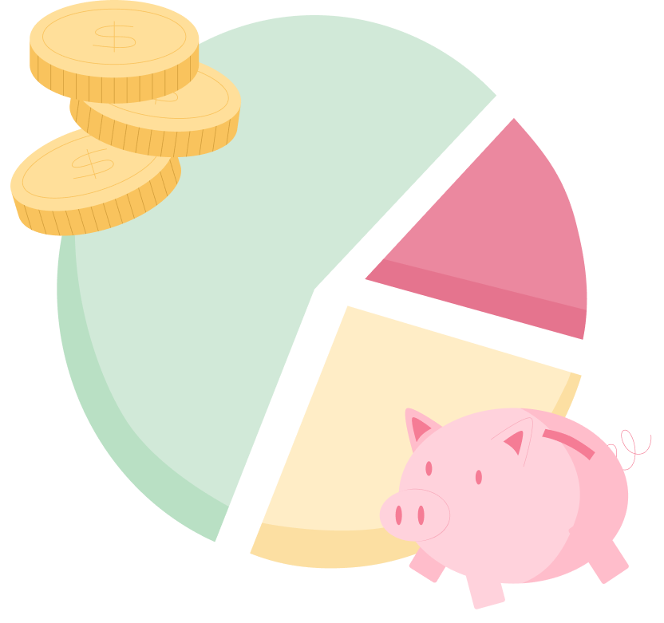
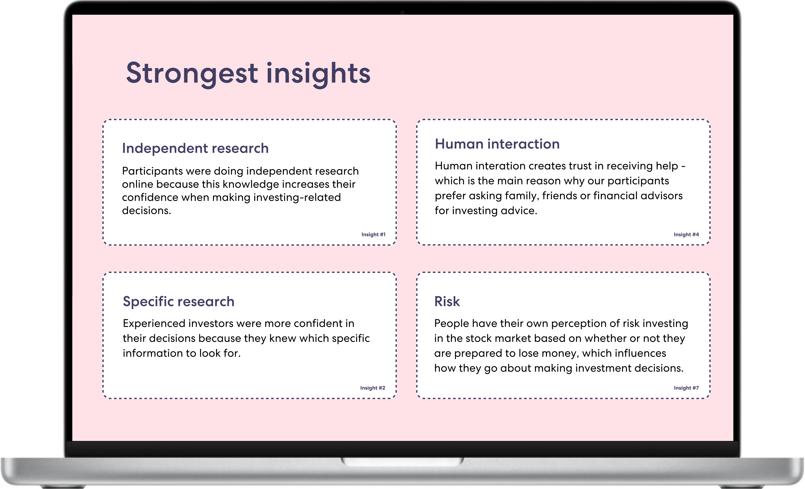
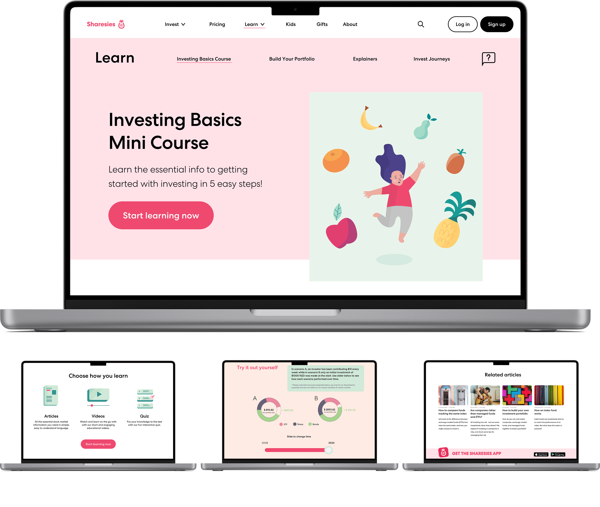
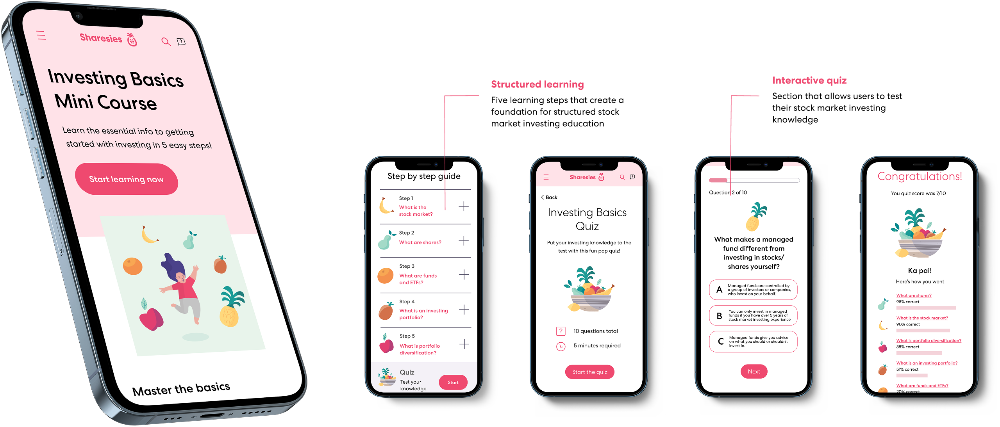

Who we spoke to
13 participants across a range of ages, genders, employment statuses, and educational backgrounds - none of them active Sharesies users - giving us honest, unfiltered views on investing.
Case Study - UX Research & Design

The Challenge
Many potential investors never begin. Despite growing platforms like Sharesies, a significant portion of their target audience remains on the sidelines, held back by fear, confusion, and a lack of financial confidence. Our team was brought in to understand why, and design a solution to help.
Discovery
We began with desk research to build a foundation, then put people at the centre. My team interviewed 13 participants with diverse backgrounds, employment statuses, education levels, ages, and genders - all outside the Sharesies ecosystem - to gather unfiltered perspectives on how people think about investing.
The breadth of our participant group was deliberate. We wanted findings that reflected real variation in attitudes, not a narrow slice of the population. From those conversations we surfaced 32 findings and distilled them into 8 key insights.
"How might we better understand the attitudes and behaviours that non-Sharesies users have towards money and investing?"
13 participants across a range of ages, genders, employment statuses, and educational backgrounds - none of them active Sharesies users - giving us honest, unfiltered views on investing.
We mapped 32 findings into eight key insights. A strong pattern emerged: investing felt intimidating, overly complex, and culturally distant from many potential users.
The research led to a clear how-might-we direction: help people overcome uncertainty and build enough confidence to take their first step into investing.

Design Direction
After the discovery phase and analysis, we ran a workshop with Sharesies to synthesise what we had learned. That collaboration reframed our direction and led us to a new guiding question:
This question guided everything that followed. Initial concepts explored integrating education into the sign-up flow, but testing quickly showed this created friction rather than reducing it. We pivoted. A competitive audit revealed a clear gap in Sharesies' educational offering. We tested two low-fidelity directions:
Concept testing with 5 participants revealed users wanted a combination of both, structured step-by-step content with interactive elements woven throughout.
"How might we help people grasp investing basics and start investing in a way that feels fun and fast?"
Validation
Usability testing with 5 participants across two rounds led to targeted improvements: search bar added, step directory hierarchy clarified, reading time placement fixed, and quiz stats expanded.
Solution
A structured, interactive learning experience embedded in the Sharesies platform, helping new investors grasp the basics in 5 steps, at their own pace.


Reflection
The mid-project pivot was the most valuable moment. Letting research lead, even when it means abandoning early work, produces stronger outcomes.
Good team communication keeps a project on track when things shift.
Every design decision needs a clear why behind it.
Investing simulation integrated into the Sharesies app.
Further usability testing to identify remaining friction.
Feasibility review with the development team.
Scroll to zoom · Click outside to close